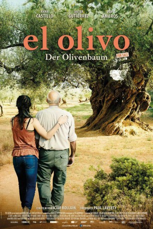

#5710 El Olivo - Der Olivenbaum
 gesehen am 14.03.2017
gesehen am 14.03.2017
 
 IMDB-Wertung: 7.0 / 10
IMDB-Wertung: 7.0 / 10  Metascore: 0
Metascore: 0 
Alma ist Anfang 20, rebellisch und impulsiv. Ihre ganze Liebe gilt ihrem Großvater, der nicht mehr spricht, seit die Familie vor Jahren gegen seinen Willen den uralten Olivenbaum verkauft hat, und langsam im Nebel des Alters zu verschwinden droht. Alma beschließt zu handeln: Sie will den Olivenbaum nach Hause zurückholen, um so dem Großvater seinen größten Wunsch zu erfüllen. Doch der Baum steht längst als Symbol für Nachhaltigkeit eingetopft im Atrium eines Düsseldorfer Energiekonzerns. Hals über Kopf stürzt sich Alma in eine Reise, die Don Quijote alle Ehre machen würde. Um so mehr, als die beiden Sancho Pansas, ihr schräger Onkel Alcachofa und ihr still verliebter Kollege Rafa, keine Ahnung davon haben, wie schwierig die Unternehmung ist, auf die sie sich da einlassen.
Jahr: 2016
Dauer: 98 Minuten
FSK: 6
Land: Spanien Studio: Piffl MedienTonspuren:
Untertitel:
Auflösung: 1080p (1920x816) Größe: 3860 MB
Genre: Drama, Komödie
Regisseur: Icíar Bollaín
Drehbuch: Etienne Comar
Soundtrack:
Darsteller:
- Anna Castillo als Alma
 Javier Gutiérrez als Alcachofa
Javier Gutiérrez als Alcachofa- Pep Ambròs als Rafa
- Manuel Cucala als Ramón
- Miguel Angel Aladren als Luis
- Carme Pla als Vanessa
- Ana Isabel Mena als Sole
- María Romero als Wiki
- Paula Usero als Adelle
- Janina Agnes Schröder als Sophie
- Cris Blanco als Estrella
- Paco Manzanedo als Nelson
- Inés Ruiz als Alma 8 años
- Aina Requena als Madre de Alma
- Pia Stutzenstein als Kristin
- Hanna Werth als Marie
- Juanma Lara als Rodrigo
- Pilar García als Conchita
- Alberto Montes als Barman
- Lesley Jennifer Higl als Recepcionista
- Cristina Garcia als Mujer del Vivero
- Iñaki Mur als Chico Discoteca
- Ana Ulloa als Médico SS
- Alexander Eisenbraun als Guardia de Seguridad
- Jürgen Klein als Guardia de Seguridad 2
- Rafa Cantos als Chico Cama
- Anselmo Sospedra als Hombre Mesa Bar 1
- Francisco Marín als Hombre Mesa Bar 2
- Emilio Verges als Hombre Mesa Bar 2
- Angel Ferreres als Hombre Mesa Bar 4
- Alba Saura als Entrevistadora
- José Torres als Hombre Mayor Sordo
- María Dolores Bel als Mujer Mayor
- Nicolás Ogalla als Nico
- Vicent Gauxach als Hombre Mayor Enfadado
- Natxo Rodes als Vecino
- Daniel Rueda als Vigilante Seguridad Francés
- Joshua Fischer als Manifestante , uncredited
- Jan Pelikan als Manifestante , uncredited
- Christian Skibinski als Manifestante , uncredited
 Nikolai Will als Guardia de Seguridad 3 , uncredited
Nikolai Will als Guardia de Seguridad 3 , uncredited
Datei: X:\2016(A-F)\El Olivo - Der Olivenbaum (2016, FSK6, 1920x816).mkv seit 13.03.2017
Festplatte: HD 2016(A-Z)
 Es gibt insgesamt 147 Filme in der Gruppe '2016(A-F)'
Es gibt insgesamt 147 Filme in der Gruppe '2016(A-F)'